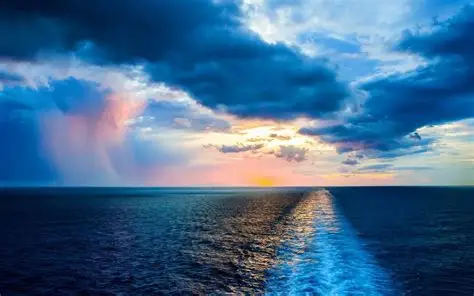
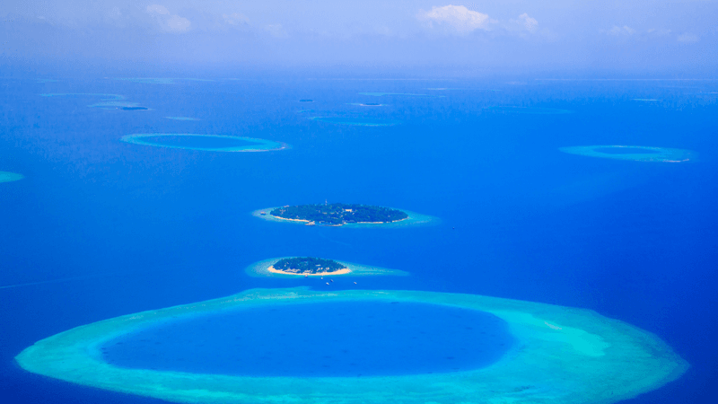

five oceans
The Pacific Ocean is the largest and deepest ocean on Earth. It covers more than one third of the planet’s surface and is bigger than all the continents combined. The Pacific Ocean lies between Asia and Australia on one side and North and South America on the other. It stretches from the Arctic Ocean in the north to the Southern Ocean in the south. The deepest point on Earth, the Mariana Trench, is located in the Pacific Ocean. Its depth is more than 11,000 meters.
.webp)
The ocean has thousands of islands, including Hawaii, Japan, the Philippines, and many small island nations. The Pacific Ocean is very important for the climate of the world because it affects weather, winds, and ocean currents. Warm and cold currents influence temperatures and rainfall in many countries. The ocean is home to a huge variety of plants and animals such as whales, dolphins, sharks, fish, corals, and plankton. Many people depend on the Pacific Ocean for food, transport, and trade. It also has valuable natural resources like fish, oil, and gas. However, the Pacific Ocean faces serious problems such as pollution, plastic waste, and climate change. Protecting the Pacific Ocean is important for the future of the planet and all living beings.
The Atlantic Ocean is the second largest ocean on Earth, covering about 20% of the planet’s surface. It lies between the Americas to the west and Europe and Africa to the east. The Atlantic Ocean stretches from the Arctic Ocean in the north to the Southern Ocean in the south. It is known for its distinctive S-shape and is connected to the Arctic Ocean through the Greenland Sea and to the Mediterranean Sea through the Strait of Gibraltar.
The Atlantic Ocean is home to a wide variety of marine life, including fish, whales, dolphins, sharks, and seabirds. It also has important ecosystems such as coral reefs and deep-sea trenches. The ocean plays a crucial role in regulating the Earth’s climate by absorbing heat and carbon dioxide from the atmosphere. The Gulf Stream, a warm ocean current in the Atlantic, helps moderate temperatures in Europe and North America. The Atlantic Ocean has been a major route for exploration, trade, and migration throughout history. However, it faces challenges such as pollution, overfishing, and climate change. Protecting the Atlantic Ocean is essential for maintaining biodiversity and ensuring sustainable use of its resources for future generations.
The Indian Ocean is the third largest ocean on Earth, covering about 20% of the planet’s surface. It is located between Africa to the west, Asia to the north, Australia to the east, and the Southern Ocean to the south. The Indian Ocean is known for its warm waters and is an important route for international trade and transportation.
The Indian Ocean is home to a diverse range of marine life, including fish, whales, dolphins, sharks, and coral reefs. It also has important ecosystems such as mangroves and seagrass beds. The ocean plays a significant role in regulating the Earth’s climate by absorbing heat and carbon dioxide from the atmosphere. The Indian Ocean is also known for its monsoon winds, which bring seasonal rains to many countries in the region. However, the Indian Ocean faces challenges such as pollution, overfishing, and climate change. Protecting the Indian Ocean is crucial for maintaining biodiversity and ensuring sustainable use of its resources for future generations.
The Arctic Ocean is the smallest and shallowest of the world's oceans. It is located around the North Pole and is surrounded by the Arctic Circle. The Arctic Ocean is known for its ice-covered surface and cold climate. It is home to a variety of marine life, including polar bears, seals, walruses, and various fish species. The ocean plays a crucial role in regulating global climate patterns and is affected by melting ice caps due to climate change.
.webp)
The Arctic Ocean has important ecosystems such as sea ice, which provides habitat for many species. It also has significant biodiversity, including unique species adapted to cold environments. The ocean plays a role in global climate regulation by reflecting sunlight back into space through its ice cover. However, the Arctic Ocean faces challenges such as melting sea ice, pollution, and climate change. Protecting the Arctic Ocean is essential for maintaining biodiversity and ensuring sustainable use of its resources for future generations.
The Southern Ocean, also known as the Antarctic Ocean, is the fourth largest ocean on Earth. It surrounds the continent of Antarctica and is located south of the Atlantic, Indian, and Pacific Oceans. The Southern Ocean is known for its cold temperatures and unique marine life. It is home to various species such as penguins, seals, whales, and krill. The ocean plays a crucial role in regulating global climate patterns and is affected by melting ice due to climate change.

The Southern Ocean has important ecosystems such as sea ice, which provides habitat for many species. It also has significant biodiversity, including unique species adapted to cold environments. The ocean plays a role in global climate regulation by absorbing carbon dioxide from the atmosphere and influencing ocean currents. However, the Southern Ocean faces challenges such as melting sea ice, pollution, and climate change. Protecting the Southern Ocean is essential for maintaining biodiversity and ensuring sustainable use of its resources for future generations.